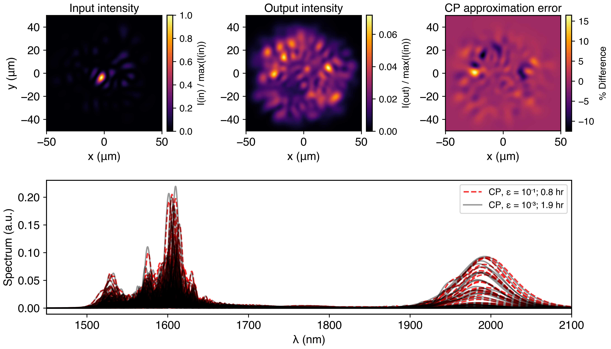
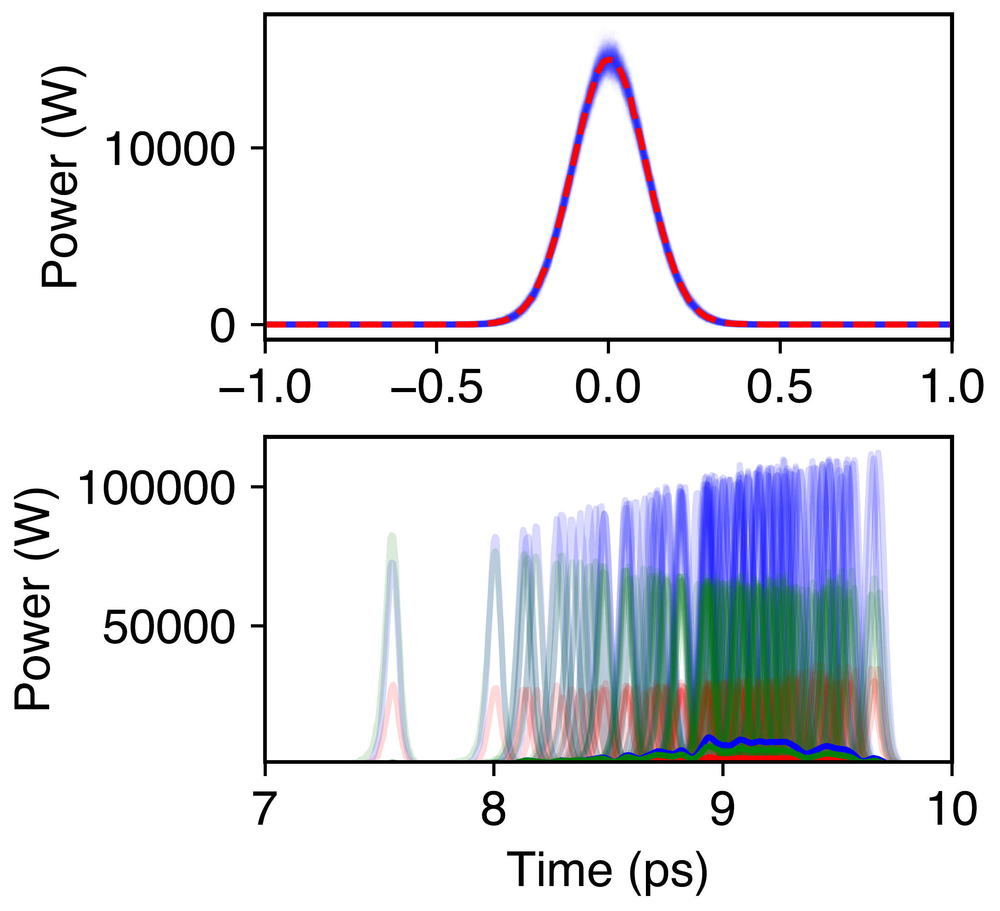
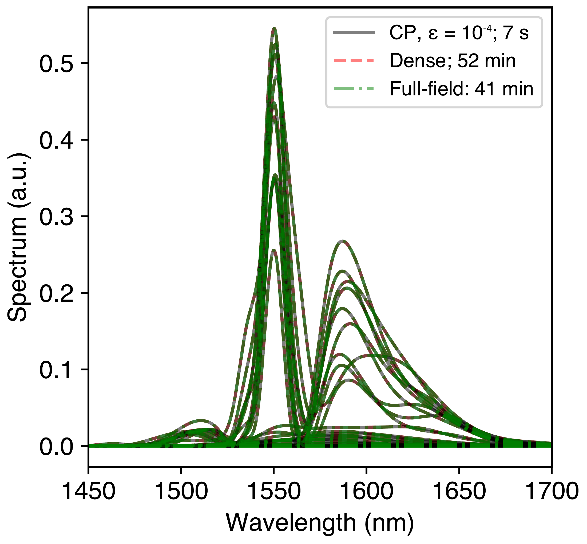

FastDifferentiableMMNLO.jl: Fast differentiable routines for classical and quantum multimode nonlinear optics

Figure 1: Practical many-mode simulations of strongly nonlinear pulse dynamics. A 250 fs pulse propagates through 1 m of graded-index fiber in a simulation at a step size of 100 microns, retaining 1,035 spatial modes, with 120 modes populated at launch. The upper panels show the initial and final spatial intensity, summed over frequency, and the difference between two CP approximations (the trick that makes the code fast). The lower panel compares spectra of the first 120 modes at tensor tolerances ε = 10⁻¹ and 10⁻³. The displayed propagation times are 0.8 and 1.9 hours on an NVIDIA H100 SXM GPU. This example does not make use of the circular symmetry and illustrates a generic “compression” method for making the simulations fast.
1. Overview of the code
This page outlines a code that I have been developing which, broadly speaking, gives access to simulations of nonlinear multimode dynamics at very high mode counts, with demonstrations of nontrivial hour-scale simulations involving over a thousand modes. Figure 1 above shows this example. The code has two main routines for solving the classical multimode nonlinear Schrödinger equation: a modal representation routine and a full-field routine. The modal representation solves for modal envelopes \(A_{m}(t)\) such that their modulus squared gives the instantaneous power in each mode.
with the nonlinear response given by
In other words, the code considers dispersion (D), linear gain and loss (g,a) [no corresponding rate-equation dynamics], and nonlinearity (instantaneous Kerr, Raman, and self-steepening). A full table of symbols is provided in Section 4. An introduction to this equation, and the next equation, can be found in this review article [Wright2017]. There is additional support for polarization. Rate-equation dynamics for the gain are not yet implemented.
The multimode generalized nonlinear Schrödinger equation (MMGNLSE) above, while often considered in the context of fibers, is equally valid for other waveguide geometries, and the code supports user-supplied dispersion and nonlinear overlaps, giving support for generic guided structures. The modal representation above has support for CPU and GPU execution.
The code also contains a 3+1D solver (GPU only). The relevant equation for the complex electric field envelope \(\mathcal{A(}x,y,z,t)\) is:
1.1 Adjoints and quantum noise
This code also has support for computing gradients of various observables with respect to the initial conditions. Examples of observables include energy (or photon number) of arbitrarily filtered outputs (frequency-domain filter, spatial aperture, etc.) or pulse timing. In addition to providing information about sensitivity to initial conditions and gradient information which could be used for optimization (e.g., controlling some output through a spatial light modulator applied to an input pulse), these gradients are important for calculating quantum noise response in a linearized quantum noise approximation. This is formalized through quantum sensitivity analysis [Uddin2025, Rivera2025]. Denoting the collection of all initial amplitudes as \(\mathbf{\alpha}_{in},\mathbf{\alpha}_{in}^{*}\), we can say \(X_{out} = X_{out}\left( \mathbf{\alpha}_{in},\mathbf{\alpha}_{in}^{*} \right)\) and its variance is given in a linearized quantum noise approximation as:
The correlation matrix (with entries such as \(\left\langle \delta\mathbf{a}\delta\mathbf{a} \right\rangle\)) contains the quantum statistics of the initial fields (e.g., coherent, squeezed, thermal, multimode entangled). For a multimode coherent initial state, the covariance expression above simplifies to:
The code provides support for computing the relevant gradients through an adjoint equation (implemented only for the modal representation). In addition to dealing with initial condition noise (the equations above), the code also provides routines for computing noise due to distributed noise sources (Langevin terms). The code allows for computing added noise due to gain, loss, and Raman noise. The treatment can be straightforwardly extended to other noise sources. As an example of what the code allows, we have tested the distributed noise implementation against one of the few analytical predictions that exist for quantum noise in nonlinear optics: the timing jitter of an \(N = 1\) soliton due to vacuum fluctuations, gain (Gordon-Haus) noise, and Raman noise. It is compared to predictions of soliton perturbation theory [Corney2001].
Figure 2: Adjoint-based quantum sensitivity analysis (QSA, markers) is compared with soliton perturbation theory (SPT, lines) for a fundamental soliton. We compare contributions from input vacuum noise, Gordon–Haus noise, and distributed Raman noise. L/Ld is the fiber length in units of the dispersion length. The vertical axis is pulse-timing variance in s².
In cases where a linearized quantum noise approximation is insufficient, the code supports propagating ensembles of initial conditions with shot noise or excess phase-insensitive noise. An example is shown below, where we propagate a 20-mode soliton (105 modes retained) over a stochastic ensemble with 60 dB wideband excess noise. 120 trajectories are evaluated (it takes six hours with our code; taking advantage of more symmetry, it can be shorter).

Figure 3: (a) Time profile of the initial pulse in the lowest mode for 120 shots with a pulse-energy fluctuation of 0.1% (implemented by independent phase-insensitive white noise with a Fano factor of 60 dB). (b) Time profile of the highest-peak-power soliton that broke off of the initial pulse, shown for modes 1, 2, and 6, as well as the average time profile over 120 shots. 105 modes are retained in the simulation, which involves an initial twenty-mode (modes 1–20) launch propagating through one meter of fiber.
2. Capabilities of the code through worked examples
There are many more examples than outputs shown in this overview. All examples correspond to a Jupyter notebook in the repository that you can play with. A summary of the capabilities of this code is given in the table below. As a note of caution: the GPU examples are based on my personal GPU workflow (interactive Jupyter notebook launched from VS Code after connecting via SSH to a university HPC cluster). You will want to adapt these examples to your workflow.
| Capability / feature | Raman soliton filtering | Soliton jitter | Step-index squeezing | Normal-dispersion CP | Birefringent solitons | Stochastic fission | CP mode-count scaling | Full-field vs. CP | 1,035-mode propagation | 30-mode CP benchmark |
|---|---|---|---|---|---|---|---|---|---|---|
| Dense forward | ✓ | ✓ | ✓ | ✓ | ✓ | — | ✓ | ✓ | — | ✓ |
| CP forward | — | — | ✓ | ✓ | — | ✓ | ✓ | ✓ | ✓ | ✓ |
| Full-field forward | — | — | — | — | — | — | — | ✓ | — | — |
| Dense adjoint | ✓ | ✓ | — | — | ✓ | — | — | — | — | — |
| CP adjoint | — | — | ✓ | — | — | — | — | — | — | — |
| Stochastic | — | — | ✓ | — | — | ✓ | — | — | — | — |
| Distributed noise | ✓ | ✓ | — | — | — | — | — | — | — | — |
| Time | ✓ | ✓ | ✓ | ✓ | ✓ | ✓ | ✓ | ✓ | ✓ | ✓ |
| Spatial modes | — | — | ✓ | ✓ | ✓ | ✓ | ✓ | ✓ | ✓ | ✓ |
| Polarization | — | — | — | — | ✓ | — | — | — | — | — |
| GPU | — | — | — | — | — | ✓ | ✓ | ✓ | ✓ | ✓ |
| External validity | — | ✓ | — | — | ✓ | — | — | — | — | ✓ |
| Internal validity | ✓ | ✓ | ✓ | ✓ | ✓ | — | ✓ | ✓ | ✓ | ✓ |
Table 1: Capabilities exercised by the example notebooks. A checkmark indicates that an example demonstrates a capability; a dash means that the particular example does not demonstrate that capability. Column headers link to the notebooks. Internal validity denotes comparisons within the package or checks of limiting cases; external validity denotes comparisons with independent code or analytical predictions.
3. Why is it fast?
The code uses two sources of speedup. The largest contribution at high mode counts, which applies to both CPU and GPU usage, comes from a new algorithm based on a low-rank representation of the four-wave mixing tensor \(S\ \)which appears in the modal representation. A second large speedup comes from using GPU-based routines for simulating the multimode nonlinear Schrödinger equation, as is also available in tools from the Wise group at Cornell [MMTools]. Unlike existing codebases which use a massively parallel algorithm, this codebase simply uses a CUDA-accelerated RK4IP algorithm.
The core speedup is based on a CANDECOMP/PARAFAC (canonical polyadic decomposition [Kolda2009]) of the nonlinear tensor as
To cut a long story short, for a variety of index profiles, including GRIN, step-index, and a fiber with broken symmetry, the simulation complexity goes from quartic to approximately quadratic. This is illustrated below for these three fibers by evaluating the time to carry out one z-step of the differential equation. The timing speedup is large. At 1,000 modes, the speedup on a single GPU of the CP algorithm versus the standard algorithm (same hardware) is estimated to be roughly 10,000-fold.
Figure 4: Compression of the four-wave-mixing tensor. CP rank and runtime as a function of mode count. (a) CP rank leading to reconstruction of the four-wave mixing tensor at different error levels for a step-index fiber, a GRIN fiber, and a fiber with a perturbed elliptical index profile (index profile and fundamental mode shown in inset; the perturbations are regions of lower index). Fits of rank versus mode count are of the form \(R(M,\epsilon) \sim \ M^{b}\) showing a roughly linear scaling of rank with mode count in all cases. (b) Time to execute one propagation step of the MMGNLSE for the different systems, using the CP-decomposed tensor and the standard dense approach (pink). Curves beyond 120 modes are an extrapolation. Fits are to the form \(t(M,\epsilon)\ = \ c_{0}\ + \ c_{1}M^{b}\).
The CP approach is implemented on CPU and GPU. An example notebook, titled “om4_1030.ipynb”, illustrates the point – it propagates a 500 fs, 50 kW pulse at 1030 nm center wavelength through 1 m of GRIN fiber. For just six modes, the standard quartic-scaling modal simulation took 55 minutes for one meter of propagation with a 100 µm step size and 8,192 time points. A twenty-one-mode simulation is projected to take six days on a single CPU core. With the CP compression approach, the six-mode simulation takes 1.5 minutes (36× speedup), and the twenty-one-mode simulation takes 15 minutes and achieves essentially full accuracy (projected 540× speedup over the quartic algorithm).
Traditionally, the full-field representation is used in place of modal solvers, even when all the physics lives in a guided-mode subspace, because of the poor scaling of the modal representation with mode count. The modal representation uses a new algorithm based on tensor decomposition of the nonlinear tensor \(S_{mnpq}\) that converts the typical quartic scaling to an approximate quadratic scaling, without relying on special symmetries. As a result, we often find that a modal representation can outperform the full-field representation at matched accuracy. A dramatic example is shown in the figure below.

Figure 5: Benchmarking CP decomposition against full-field and dense modal solvers. Modal spectra predicted by a modal and full-field representation, designed such that the relative norm error in the modal spectra is roughly \(5\ \times \ 10^{- 4}\) between CP and dense and between full-field and dense. 150 modes are retained in the simulation, which involves an initial ten-mode (modes 6–15) launch in step-index fiber propagating through 0.25 meters of fiber.
4. Table of symbols
Symbols used in the equations, captions and figure labels are defined below. Tildes denote temporal Fourier transforms; hats denote operators or the CP approximation, as specified in each row. This table was generated by GPT-6 Astra.
| Symbol | Meaning |
|---|---|
| Coordinates, fields and indices | |
| \[z,\ L\] | Propagation coordinate and total propagation length; measured in meters. |
| \[t,\ \tau\] | Retarded pulse time and the delay variable in the Raman convolution. The code uses picoseconds for time. |
| \[x,\ y\] | Transverse spatial coordinates. |
| \[\omega_{0},\ \Omega\] | Carrier angular frequency and angular-frequency offset from the carrier. The absolute angular frequency is ω₀ + Ω. |
| \[\lambda\] | Optical wavelength, shown in nanometers in the spectra. Distinct from the CP weight λᵣ. |
| \[m,n,p,q\] | Modal indices in the overlap tensor and modal propagation equation; spatial-mode indices for the scalar equations shown. |
| \[A_{m}(t),\ {\widetilde{A}}_{m}\] | Modal envelope and its temporal Fourier transform. |Aₘ(t)|² is instantaneous power in mode m; propagation-distance arguments are suppressed. |
| \[A(x,y,z,t)\] | Full-field envelope, with intensity normalization: |A|² is optical intensity, rather than power in a single spatial mode. |
| \[I({in}),\ I({out})\] | Spectrally summed input and output spatial intensities in Figure 1. max(I(in)) is the peak input value used for the displayed normalization. |
| \[|E|\] | Magnitude of the transverse mode field in the mode-profile inset of Figure 4. |
| Propagation and nonlinear response | |
| \[D_{m}(\Omega)\] | Modal dispersion multiplier after subtracting the reference carrier phase and group delay; units of inverse length. |
| \[\beta_{m}(\omega)\] | Propagation constant of mode m at angular frequency ω; units of inverse length. |
| \[\beta_{{ref},0},\ \beta_{{ref},1}\] | Reference carrier propagation constant and reference group delay per unit length. They define the phase and moving-time frame. |
| \[\beta_{0}\] | Reference carrier propagation constant used in the full-field diffraction term. |
| \[g_{m},\ a_{m}\] | Modal power-gain and power-attenuation coefficients. Their contribution to the envelope is (gₘ − aₘ)/2. |
| \[\widehat{D},\ \widehat{a}\] | Temporal dispersion and power-attenuation operators in the full-field equation; applied as spectral multipliers. |
| \[\nabla_{\perp}^{2},\ \partial_{t}\] | Transverse Laplacian (the sum of second derivatives in x and y) and partial derivative with respect to pulse time. |
| \[V(x,y)\] | Real transverse index potential in the full-field equation; represents refractive-index confinement and has units of inverse length. |
| \[n_{2},\ c\] | Nonlinear refractive-index coefficient and speed of light in vacuum, respectively. |
| \[\kappa(\Omega)\] | Frequency-dependent nonlinear prefactor, including the material coefficient, self-steepening factor and numerical spectral window. |
| \[w(\Omega)\] | Dimensionless numerical spectral-edge taper for the nonlinear term. Setting w = 1 gives the unwindowed expression. |
| \[C_{m}(t),\ {\widetilde{C}}_{m}\] | Modal nonlinear response and its temporal Fourier transform, including instantaneous Kerr and delayed Raman contributions. |
| \[C_{ff}\] | Corresponding local nonlinear response in the full-field representation; “ff” denotes full field. |
| \[f_{R}\] | Fraction of the nonlinear response assigned to the delayed Raman contribution; dimensionless. |
| \[h_{R}(t)\] | Causal Raman response kernel, normalized to unit time integral. Its units are inverse time. |
| \[(h_{R}*X)(t),\ X(t)\] | Causal temporal convolution with the Raman kernel. Here X is a generic time-dependent function, such as a product of field envelopes. |
| \[( \cdot )^{*},\ *\] | A superscript star denotes complex conjugation; a star between the Raman kernel and a function denotes convolution. |
| \[i\] | Imaginary unit, satisfying i² = −1. |
| Adjoints and quantum noise | |
| \[\alpha_{in},\ \alpha_{in}^{*}\] | Collections of mean input amplitudes and their complex conjugates, in photon normalization. They are treated as independent variables when taking complex derivatives; (0) denotes the input plane. |
| \[k\] | Index over the discrete input degrees of freedom, including frequency, spatial mode and polarization where retained. |
| \[X_{out},\ (\Delta X_{out})^{2}\] | Output observable and its variance in the linearized noise expressions. |
| \[a,\ a^{\dagger}\] | Annihilation and creation operators for the input optical degrees of freedom. The dagger denotes the Hermitian adjoint. |
| \[\delta a,\ \delta a^{\dagger}\] | Fluctuations of those operators about their input-state mean values. |
| \[\langle \cdot \rangle_{in}\] | Quantum expectation in the input state. The correlation-matrix blocks contain ordered second moments of the input fluctuations. |
| \[\nabla_{\alpha_{in}}X_{out}\] | Vector of derivatives of the output observable with respect to the input amplitudes, evaluated on the mean trajectory. Its squared Euclidean norm gives the coherent-input variance shown. |
| \[N\] | Soliton order; N = 1 denotes a fundamental soliton. |
| \[L_{d},\ L/L_{d}\] | Dispersion length and propagation length normalized by that scale, as used in Figure 2. |
| Tensor compression and scaling fits | |
| \[S_{mnpq},\ {\widehat{S}}_{mnpq}\] | Four-mode nonlinear overlap tensor and its CP approximation, respectively. |
| \[M\] | Number of retained spatial modes in the mode-count and scaling comparisons. |
| \[R,\ R(M,\epsilon)\] | Number of retained CP components (CP rank), also written as a function of mode count and tensor-error tolerance. |
| \[r\] | CP-component index, running from 1 to R. |
| \[\lambda_{r}\] | Weight of CP component r. This λ carries a component index and does not denote optical wavelength. |
| \[U_{mr}^{(1)},\ldots,U_{qr}^{(4)}\] | Entries of the four factor matrices in the CP decomposition. Each superscript labels one tensor axis, and column r belongs to component r. |
| \[\epsilon,\ \varepsilon\] | Two typographic forms of the relative Frobenius reconstruction error of the overlap tensor, used to specify the CP approximation tolerance. |
| \[b\] | Fitted power-law exponent. Rank and runtime fits use separate fitted values. |
| \[t(M,\epsilon),\ c_{0},\ c_{1}\] | Runtime per propagation step and its fitted coefficients in Figure 4. Here t denotes computational time, distinct from retarded pulse time. |
5. Role of AI in developing the code
Coding agents were used to write essentially every line of code in this solver (with substantial input from GPT-5.5, GPT-5.6 Sol, and Claude Fable 5). My role was to steer every part of the development and validate the code: to choose the routines to be implemented, to design the interface for calling routines, and to develop the examples used to rigorously test the code against my own expectations (as well as other public codes). All example notebooks in the repository were chosen and hand-written by me following the AI's documentation, to test the usability and accuracy of the written code. This work started on May 9 and a “finished” public checkpoint was released on August 27. In this subsection, I will primarily discuss the high-level workflow, and how I probed the validity of the resulting code.
Fortunately, there were several prior implementations that could be used (a) to anchor a unified implementation and (b) provide measures of external validity and internal validity for the code. Our group had previously built forward and adjoint solvers for the multimode nonlinear Schrödinger equation using a dense RK4IP algorithm [MMNoise]. The forward solver, however, had less capability than a state-of-the-art dedicated classical solver [MMTools], which has more comprehensive support for polarized multimode propagation with anisotropic Raman scattering models. The first task with GPT-5.5 (Codex) was to rewrite the dense RK4IP MMGNLSE solver to allow for polarized nonlinear propagation with more complex Raman scattering models. Importantly, I imposed the constraint that the code had to be differentiable using standard Julia packages (ForwardDiff.jl and Zygote.jl) which meant that existing codes could not be directly ported over. Once this was working (verified by reproducing examples from the existing implementations), I steered it to implement the adjoint equation (to get gradients with respect to initial conditions) corresponding to the forward equation. The adjoint was tested by comparing its outputs to reverse-mode differentiation of the forward solver, as well as a stochastic forward implementation. After having working dense forward and adjoint solvers, I steered Codex to write functions to perform the CP decomposition given above. Interestingly, despite existing packages, the AI implementation provided clear performance improvement (the main improvement was using a low-rank higher-error compression to warm start a higher-rank lower-error compression). The CP decomposition could straightforwardly be tested by comparing results of low-error tensor compressions with the previously implemented dense solver. Once this was all done, Codex wrote CUDA implementations of the dense and CP forward and adjoint solvers. These were checked against the CPU solvers and a held-out simulation of 30-mode soliton propagation from the Wise group at Cornell which relies on a different implementation from those previously mentioned (the comparison is shown in the 30-mode CP benchmark). The last major step was to implement a full-field solver to compare timings against the modal simulation. Its validity is assessed by comparison to the modal representation for a case where the dynamics live in a fixed modal subspace. Along the way, the code was refactored and various CPU and GPU implementations were optimized.
It is important to mention that as of today, despite coding agents’ prolific code-writing abilities, they were not able to execute this project autonomously, and failed already at the first step in the process (transcribing the forward solver in a differentiable way). Major errors accumulated in almost every part of the development that had to be manually caught and corrected. Unsurprisingly, “non-standard” implementations (specifically almost anything to do with adjoints with multimode Raman, quantum noise normalizations, and determining when a simulation result is physical) required considerable input. Models also tend to not engage in too much higher-order thinking and only make certain longer-term considerations when prompted rather than proactively (e.g., related to memory performance, handling large-mode regimes (outside of the original tests), and performance). Further, they tend to lead to feature creep, which led to a proliferation of function arguments which were hard for a human user to track. This also required active management (by refactoring the code multiple times to preserve interpretability and usage). Nevertheless, I find that coding agents were an unambiguous net-positive, particularly from the runtime and memory performance aspects.
6. Hardware Note
The reported CPU timings were measured on a single thread of a 2025 MacBook Pro. GPU timings reported used an NVIDIA H100 SXM GPU.
7. Citation
Rivera, N. FastDifferentiableMMNLO.jl. Version v0, Zenodo, 24 June 2026, https://doi.org/10.5281/zenodo.20829200.
8. References
[Wright2017] Wright, Logan G., et al. "Multimode nonlinear fiber optics: massively parallel numerical solver, tutorial, and outlook." IEEE Journal of Selected Topics in Quantum Electronics 24.3 (2017): 1-16.
[Uddin2025] Zia Uddin, Shiekh, Nicholas Rivera, Devin Seyler, Jamison Sloan, Yannick Salamin, Charles Roques-Carmes, Shutao Xu, Michelle Y. Sander, Ido Kaminer, and Marin Soljačić. "Noise-immune quantum correlations of intense light." Nature Photonics (2025): 1-7.
[Rivera2025] Rivera, Nicholas, Shiekh Zia Uddin, Jamison Sloan, and Marin Soljačić. "Ultra-broadband and passive stabilization of ultrafast light sources by quantum light injection." Nanophotonics 14, no. 11 (2025): 1857-1864.
[Corney2001] Corney, Joel Frederick, and P. D. Drummond. "Quantum noise in optical fibers. II. Raman jitter in soliton communications." Journal of the Optical Society of America B 18.2 (2001): 153-161.
[Kolda2009] Kolda, Tamara G., and Brett W. Bader. "Tensor decompositions and applications." SIAM Review 51.3 (2009): 455-500.
[MMNoise] https://github.com/michaelhorodynski/MultiModeNoise.jl
[MMTools] https://github.com/AaHaHaa/MMTools
9. Acknowledgements
The author acknowledges start-up funding from the School of Applied and Engineering Physics at Cornell University. The author acknowledges fruitful conversations with Michael Horodynski, Ido Kaminer, Yi-Hao Chen, Myungjoon Kim, and Frank Wise. The author also acknowledges early benchmark data generated by Myungjoon Kim that was used to validate the code. For compute: the author acknowledges the Cornell University Center for Advanced Computing for access to the Seneca High-Performance Computing cluster. AI models were used heavily as coding assistants during the execution time of this project (GPT-5.5, GPT-5.6 Sol, Claude Fable 5, and GPT-6 Astra). Section 5, “Role of AI in developing the code,” discusses how the code was validated; the examples in the public repository were all written by the author. The author also discussed and developed various mathematical results in collaboration with these models. GPT-6 Astra was used to help collect figures and equations for assembling this GitHub page, as well as assembling various tables. Figure captions were drafted by GPT-6; the remainder of the document was written by me.